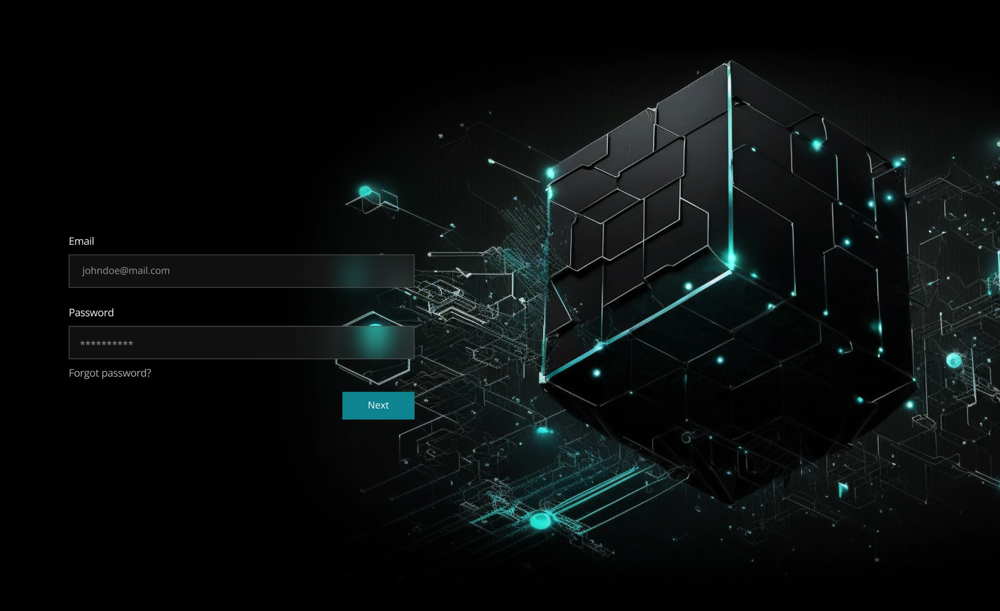
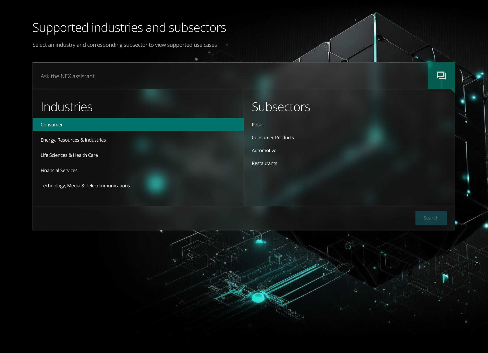
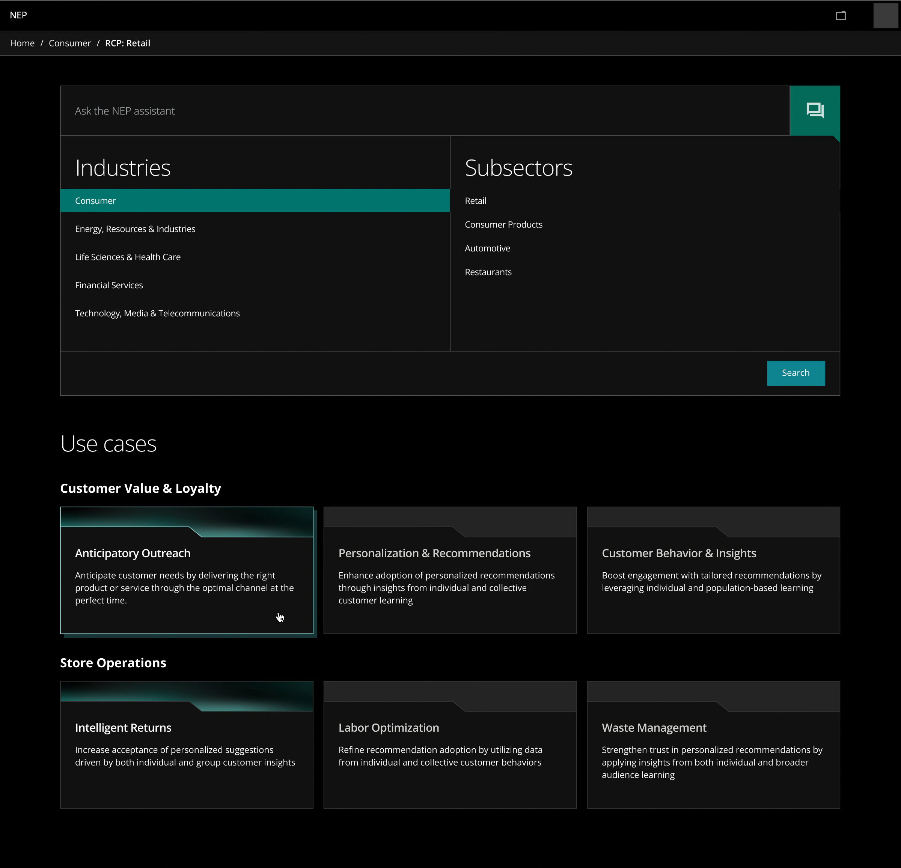
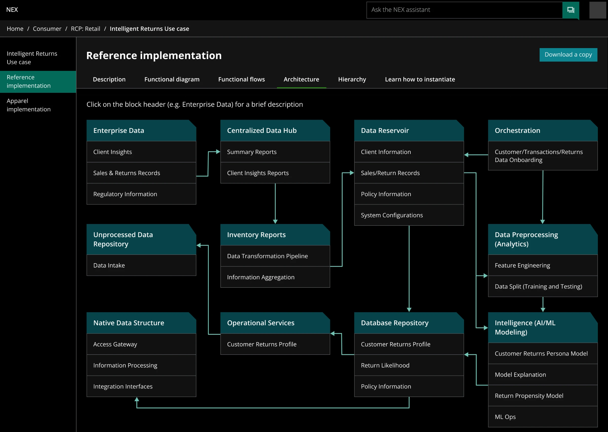
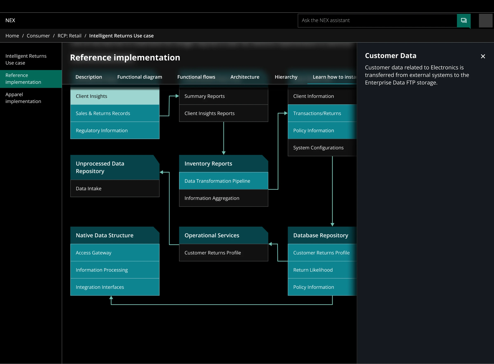
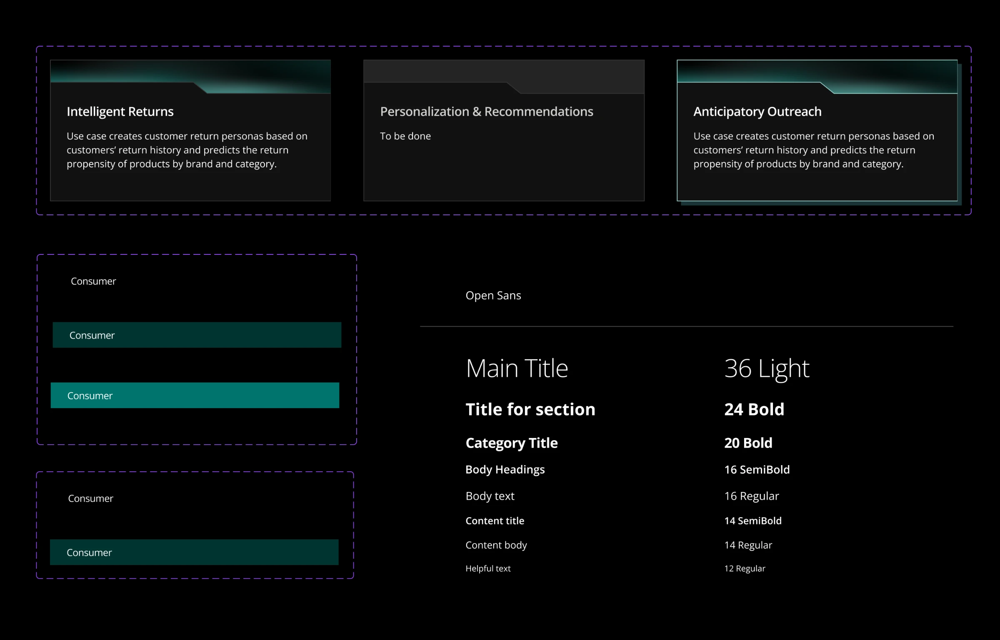

- Problem
- Use cases sat in a spreadsheet. To find one, you had to already know its exact name.
- My part
- Login, visual direction and key visual, home with industry and subsector selection and the assistant field, results grouped by business goal, part of the component library.
- Result
- A clickable prototype in three weeks, built in three one-week iterations and shown to internal stakeholders.
Reuse instead of rebuild
The platform's goal: build industry solutions faster by reusing what already exists. Each use case is assembled from shared components through a reference implementation, so finding the right one saves a team from building the same parts again.
I was one of two UI/UX designers working with a design lead. I owned the way into the product: login, visual direction, home and results. A teammate designed the use-case page itself.
The answer existed, but only in a spreadsheet
Developers and solution architects who start a project and need a use case that already solves part of it, with instructions to apply it.
In the spreadsheet the answer existed, but finding it meant knowing the right row. The prototype had to make the catalog browsable by industry and business goal, the way people describe their project, not by internal names.
Three weeks, three iterations
Three weeks, Lean UX, one iteration a week. Each week ended with client alignment.
In the workshop we mapped how use cases are built: shared components form a reference implementation, and a reference implementation is adapted into an industry use case. That nesting shaped both the navigation and the visual language.
One cube sets the visual language
The visual direction grows from one key visual I made: a dark cube assembled from blocks, lit by teal edges and points. It stands for the platform itself, separate parts that form a whole. The UI follows it: near-black surfaces, one teal accent for selection and actions, and a cut corner taken from the cube's blocks that repeats on cards, diagram blocks and the assistant button.

Two clicks to the right industry
Pick an industry, then a subsector, or just ask
Home has two ways in. Most users know their industry and subsector, so two linked lists narrow the catalog in two clicks, and the choice stays visible as a teal row. Users who already know what they need type into the assistant field on top. The assistant is an AI search over the catalog; the prototype covers its entry point, not the conversation.

Grouped by the problem you're solving
Use cases grouped by business goal
Results group use cases by the goal they serve, such as customer value and loyalty or store operations, because a developer usually starts from a business problem, not a component name. Ready use cases carry a teal header; ones still in progress stay grey, so nobody opens an empty page. The selection panel stays above the results, so switching subsector does not mean going back.

Where the search ends
The use-case page was designed by a teammate. It holds the reference implementation in tabs, from description to architecture and how to instantiate it, with a diagram that explains each block on click.


A library the next designer can pick up
We built a component library for the project, with short usage notes for designers who would continue the work. My part: use-case cards in three states (ready, hover, in progress), list rows (default, hover, selected) and the type scale, Open Sans in eight styles from 36 Light titles to 12 Regular helper text.

A working prototype in three weeks
- 3 weeks: from first workshop to clickable prototype
- 3 iterations: each closed with client alignment
- Internal demo: the prototype was shown to stakeholders
No usage data: the prototype was built for an internal demo.
Time to use case
Time from home to the right use case.
Assistant success rate
Share of assistant queries that end on a use case.
Reuse
Reuse of use cases and code across new projects.
Test with developers sooner
- Test search in week two with two or three real developers, not only with stakeholders. The structure was built on how the client describes the catalog; developers might look for it differently.
- Design the assistant's states from the start: empty, no results, a clarifying question. The entry point alone promises more than the prototype shows.